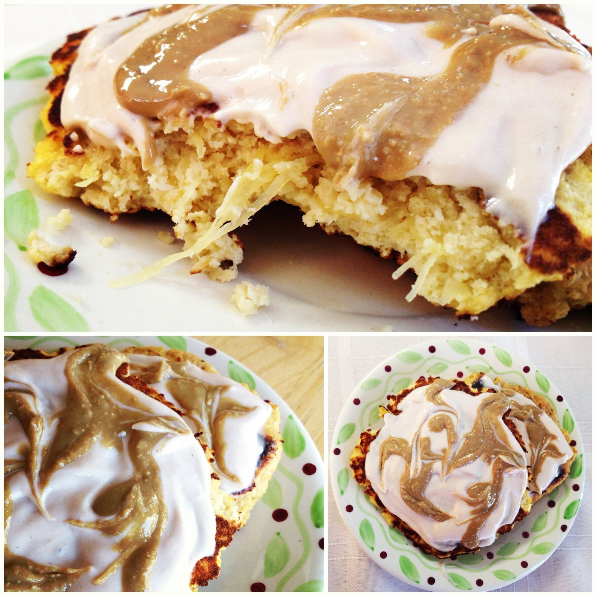
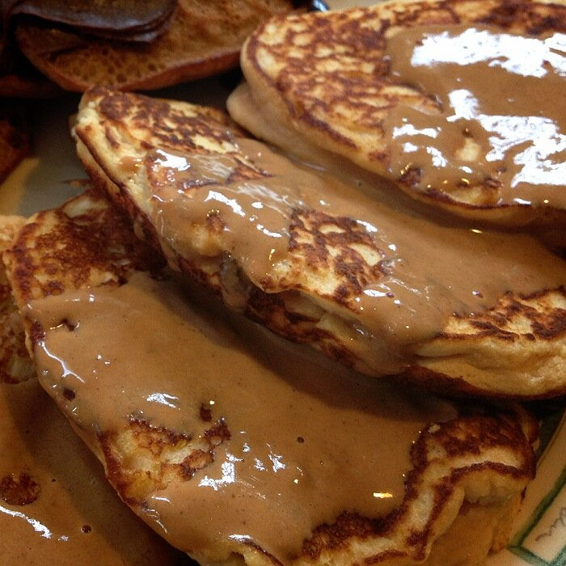

Low Carb, High Protein Spaghetti Squash Pancakes
If you don't know by now, I love squash. I loooove winter squash! Delicata!!, spaghetti, butternut, kabocha<33, and more. But I also love summer squash! Zucchini and yellow squash are always in constant excess supply in my fridge.
So when I saw the lovely yogarunlove making various squash pancakes using acorn, kabocha, and spaghetti squash, I knew I had to give it a go. They looked sooo great. And I've gotta say the looks did NOT deceive! The squash makes the pancakes SO creamy!I've got two versions I like. One "normal" and one with added protein! Both are low carb. Make these asap forreal. But beware because they are ADDICTIVE.

Spaghetti Squash PancakesServes: 1
- 1/2 cup baked spaghetti squash*
- 2.5 TBSP coconut flour
- 2 TBSP unsweetened shredded coconut (Optional)
- 1 whole egg
- 2 TBSP unsweetened almond milk
- 1 tsp vanilla extract
- 3/4 tsp baking powder
- 1 stevia packet (Optional, they're sweet enough)
Mix all of the ingredients in a bowl well and make sure the coconut flour doesn't clump. Form 2-3 pancakes in a skillet that's been coated with non-stick spray or coconut oil. Cook on a medium-low heat for 4-5 minutes, flip, and cook another 3-4 minutes. Done! I topped mine with a protein icing (plain greek yogurt, pb marshmallow whey protein, stevia) and sunflower seed butter. SO GOOOOOD.

High Protein Spaghetti Squash PancakesServes: 1
- 3/4 cup baked spaghetti squash*
- 2.5 TBSP coconut flour
- 1 whole egg
- 1 egg white
- 1/4 cup unsweetened almond milk
- 2 TBSP whey protein
- 1 tsp vanilla extract
- 3/4 tsp baking powder
- 1 stevia packet (Optional, they're sweet enough)
Same instructions as the other recipe. Mix all of the ingredients in a bowl well and make sure the coconut flour doesn't clump. Form 3-4 pancakes in a skillet that's been coated with non-stick spray or coconut oil. Cook on a medium-low heat for 4-5 minutes, flip, and cook another 3-4 minutes. Then they're done! I topped mine with Better'n Peanut Butter that was thinned out a little with almond milk. Om nom nom nom so fluffy and delicious.*If you don't like the texture of spaghetti squash (since it's slightly stringy), you could blend the ingredients before you cook them in the skillet. They'll still be really creamy.